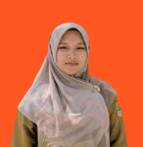
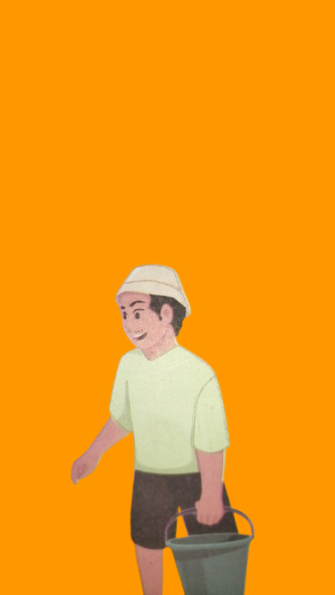
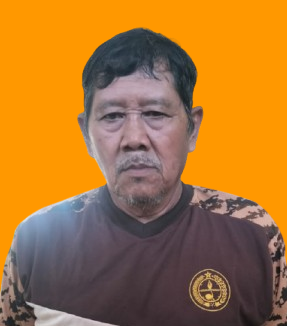

Guru dan Tenaga Kependidikan
Guru dan tenaga kependidikan SDN Kertawaluya II yang mendukung proses pembelajaran dan pelayanan pendidikan.
SMG, S.Pd
Kepala Sekolah
Memimpin dan mengembangkan program pendidikan di SDN Kertawaluya II.

N.KR
Guru Kelas 1
Mendampingi proses pembelajaran dan perkembangan peserta didik.
DSH, S.Ak
Guru Kelas 2
Mendampingi proses pembelajaran dan perkembangan peserta didik.
SJP
Guru Kelas 3
Mendampingi proses pembelajaran dan perkembangan peserta didik.
MK, S.Pd.SD
Guru Kelas 4
Mendampingi proses pembelajaran dan perkembangan peserta didik.
YW, S.Pd
Guru Kelas 5
Mendampingi proses pembelajaran dan perkembangan peserta didik.
WN, S.Pd
Guru Kelas 6
Mendampingi proses pembelajaran dan perkembangan peserta didik.
NS, S.Pd
Guru Agama
Mendukung pembelajaran pendidikan agama dan pembentukan karakter peserta didik.

Manohara, S.Pd
Guru Olahraga
Mendukung kegiatan pendidikan jasmani, olahraga, dan kesehatan.

ENCU
Operator
Mendukung pengelolaan administrasi dan data sekolah.

SYN, S.Pd
Penjaga
Mendukung keamanan, kebersihan, dan kenyamanan lingkungan sekolah.
IROP, S.Pd
Komite
Mendukung hubungan dan kerja sama antara sekolah, orang tua, dan masyarakat.